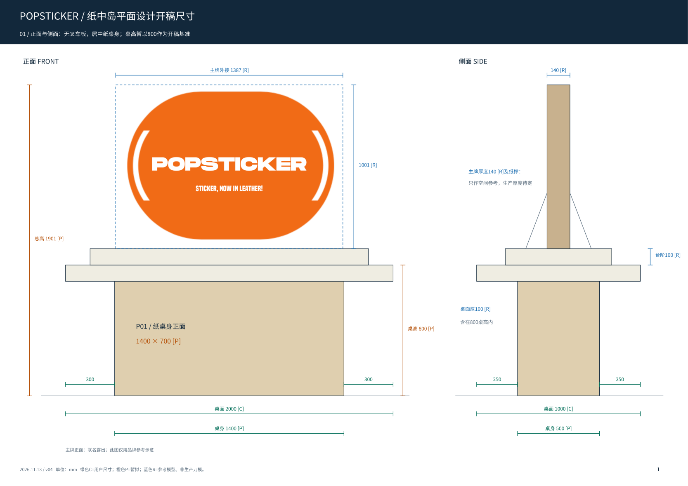
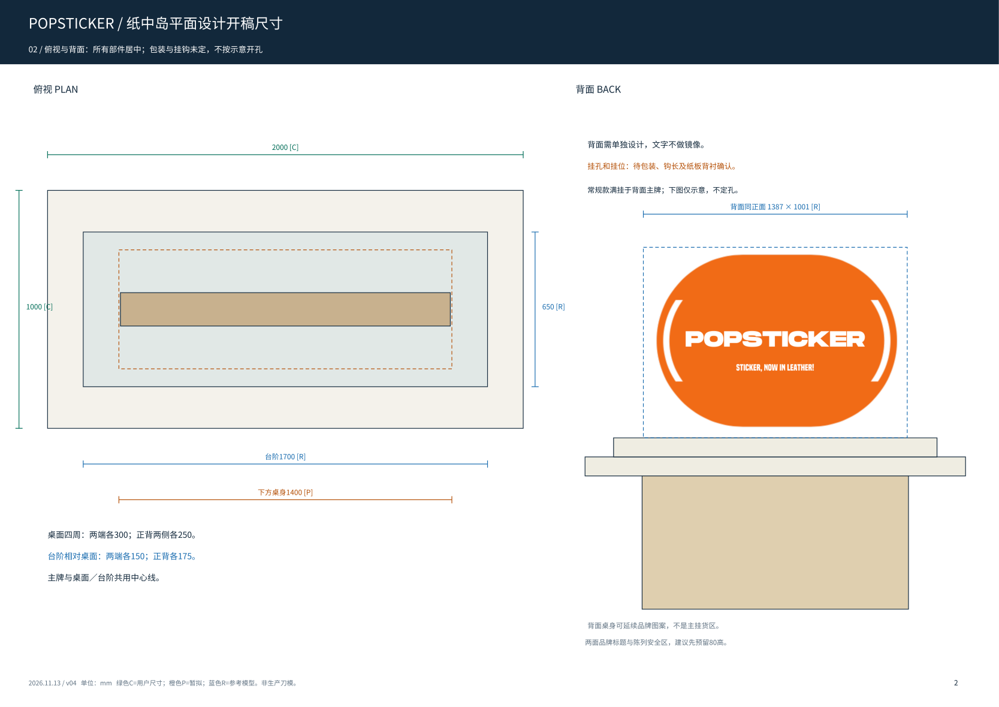
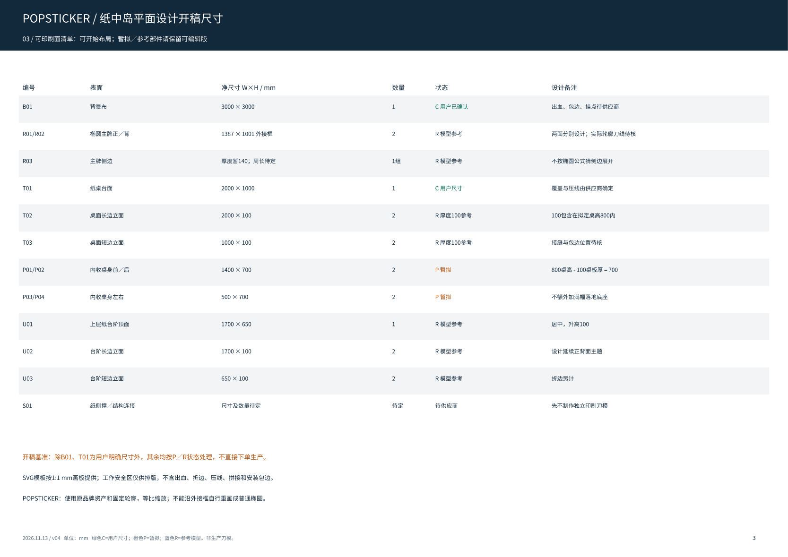
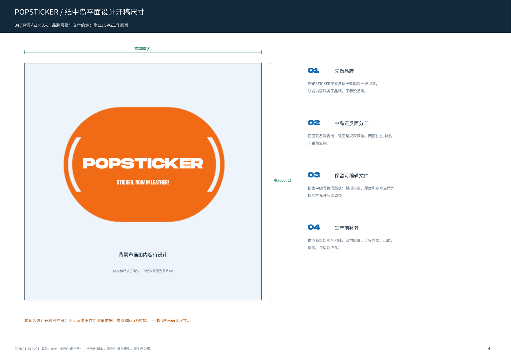

4页A3横版，含正面／侧面、俯视／背面、可印刷面清单与3×3米背景布。另有11份1:1 SVG工作画板。
桌高800mm暂拟；桌板组合厚100mm与上部纸台阶／主牌尺寸参考模型，未作为用户确认生产尺寸。桌面2000×1000、背景布3000×3000为明确尺寸；桌身1400×500为用户暂拟。纸侧撑与挂孔待供应商，不按图打孔。
下载4页尺寸册PDF · 下载设计师开稿包ZIP · 印刷面清单CSV · 使用说明



